バイク：大山祇神社に行ってきた
公開日：
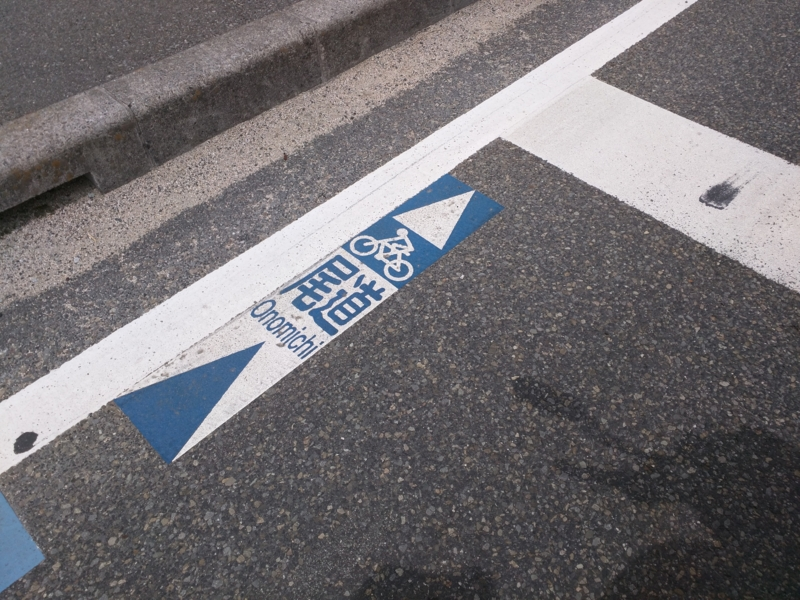
バイク：しまなみ海道行ったんだけど、降りる島を間違った。 - だるろぐ の続き。今度こそ降りる島を間違えないようにする。大三島、あぁ、大三島、大三島……。
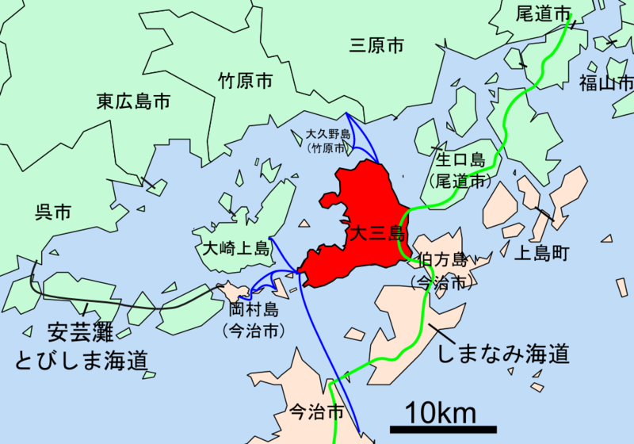
大三島（おおみしま）は、愛媛県今治市に属する芸予諸島の中の1つの有人島。愛媛県の最北に位置し、同県に属する島の中では最大である。大山祇神社がある「神の島」として知られている。
大三島は島とついているが、地理上の島に由来するわけではなく、各地にある「三島」と由来を同じくする。かつて、三島神社の総本社である大山祇神社のことを「大三島」と呼んでおり、後にそれが島全体を指す様になった。
しまなみ海道の IC がある多々良地区は、ちょうど大山祇神社がある宮浦地区の反対側にあたる。近所には温泉などもあるみたい。今回は天気が心配で帰ってしまったが、次に来るときは入りたいものだ。
さっそく山を抜けて大山祇神社に参拝……する前に、ちょっと遅めのお昼ご飯をとる。
今回寄ったのは、「くろしお」さん。バイクで走ってる途中、看板が目についた。
店先には列ができていたので、名前を記入して待つ。あんまりごはん屋さんで並ぶのは趣味じゃないけれど、ほかにいいところもなさそうだし……。店が混んでいるので、ちょっとお話をしたのをキッカケに、同じく“お独りさま”の自転車乗りのお兄さんと相席をすることになった。
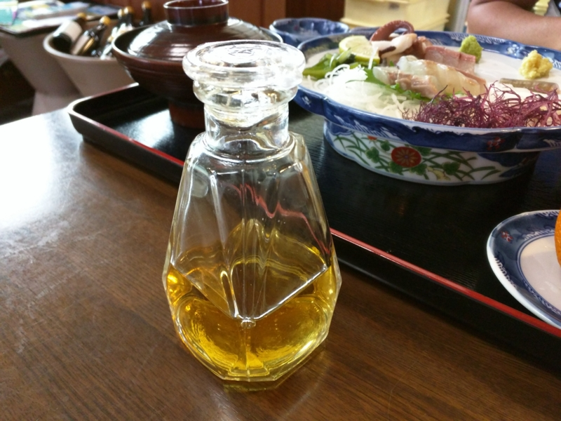
ヒラメとタコ、そしてタイのコースから、悩みに悩んだ末にタイをチョイス。相席のお兄さんは刺身定食だった。
あとで知ったが、養殖のヒラメがウリの店らしいので、ヒラメにしてもよかった。お刺身を黄金色した“白醤油”でいただくのがこの店の特長らしい。確かに醤油の味がするのだけど、クドさがなく、上品に感じる。卵かけごはんには絶対向いていないが、淡白な白身魚の風味を殺さずに食べるには絶好の醤油だと思った。
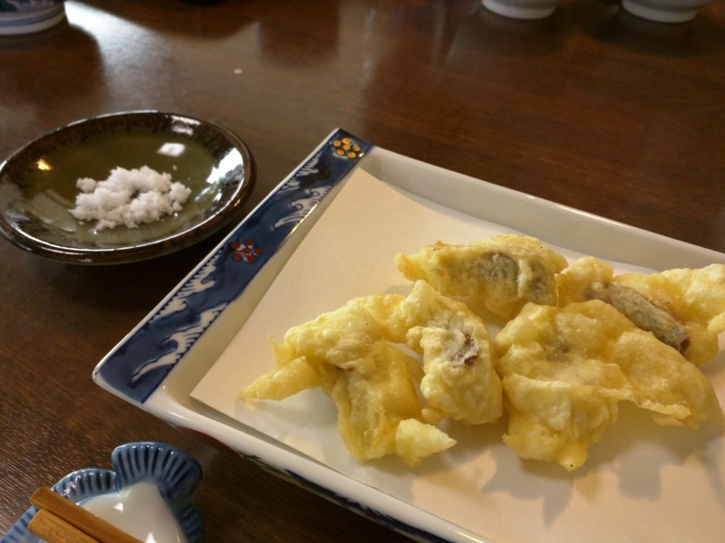
コースは、鯛の刺身と天ぷら。
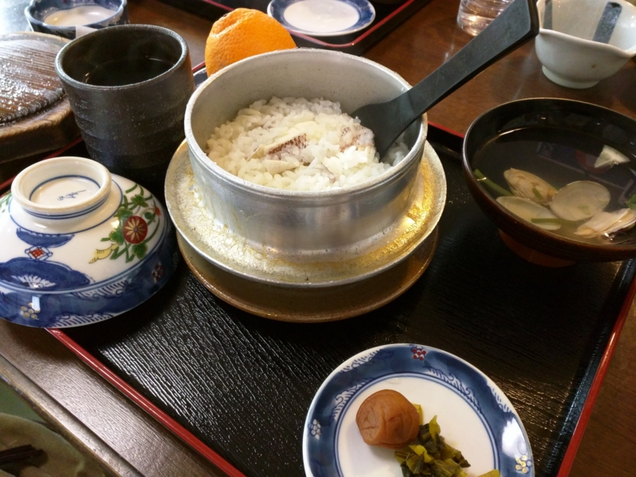
そして鯛めし。釜飯で炊き上げるタイプで、先ほどの“白醤油”を使ったのだろうか、上品でタイとコメの甘さをじわっと感じる。見た目はそれほどの量に感じなかったが、おコゲをそぎ落としながら食べるとかなり満腹、満足。ちょっと眠たくなってしまったほどだ（だいぶ待たせた＆相席させたということで、会計のときにこのお醤油をいただいた。ありがとうございます！）。
相席のお兄さんは新居浜から来たそうで、いろいろ島の話や、自転車の話を聞く。大山祇神社は宝物館がぜひともお勧めとのことだが、入館料が1,000円ほどするそう。この「くろしお」で財布のなかの野口先生が全員討ち死にしてしまったが、さいわい大三島にはサークルKがあり、そこでお金を下ろせそう。ここで話を聞いておいたおかげで、多々良と宮浦を往復する手間が省けて（コンビには多々良にしかない）、大変ありがたかった。
――さて、お腹もいっぱいになったので、目的の大山祇神社へ。
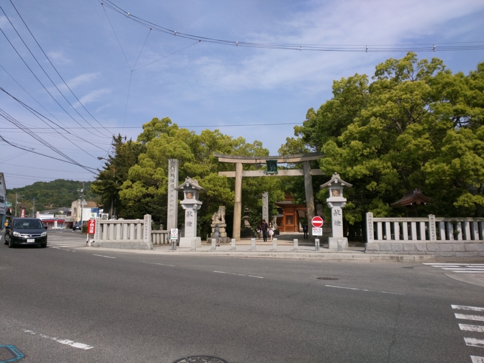
いきなりカップルと遭遇して、心えぐられる。
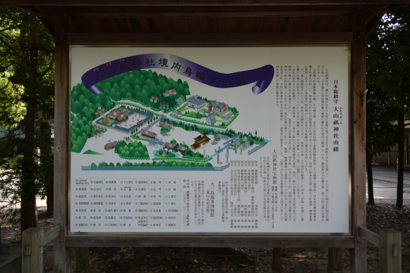
日本総鎮守、大山祇（おおやまづみ）神社。祭神は天照大神の兄、大山積大神（神社の名前は大山祇、神さまの名前は大山積）。三島大明神なんて言われたりもし、それを祀る大山祇神社は、全国の大山祇神社・三島神社の親分的な存在でもある。
海のことを“わたづみ（わた-つ-み、海つ神）”なんていうけど、“やまづみ”は山の神さまなんだね。大三島の“み”も、元は“神（み）”と関係あるのかもしれない。記紀にはオオヤマツミそのものの記述はあまりなく、イザナギ・イザナミの国生みで埋まれたこと、有名な神様の親であることしかあまりよくわかっていない。あと、海のど真ん中にいることもあり、山の神さまのくせに海の神さまでもあるというちょっとよくわかんないポジションなのも面白いかな。
オオヤマツミに関する話で自分が好きなのは、ニニギノミコトがオオヤマツミの娘に恋をした話。その娘はコノハナノサクヤヒメといってたいそうな美人だったらしいのだけど、実はもう一人、イワナガヒメという姉妹がいた。ニニギノミコトがオオヤマツミに娘をくれといったところ、オオヤマツミは「二人セットやったらええで、お得やろ（意訳」という。しかし、ニニギノミコトはブサイクなイワナガヒメを追い帰し、コノハナノサクヤヒメとばかりイチャイチャしてしまう。オオヤマツミはため息をつきながら言った。「イワナガヒメはブサイクだけど、娶ればイワのごとく長寿が得られたのになー、残念やなー、お前ら（天皇家）は寿命短くなるわー、しゃーないわー」ことあと、ニニギノミコトとコノハナノサクヤヒメの間にもひともんちゃくあるのだけど、まぁ、それは興味があったら調べてみてください。ニニギノミコトは割とあかん奴やとわしは思う。
――まぁ、それは置いといて。
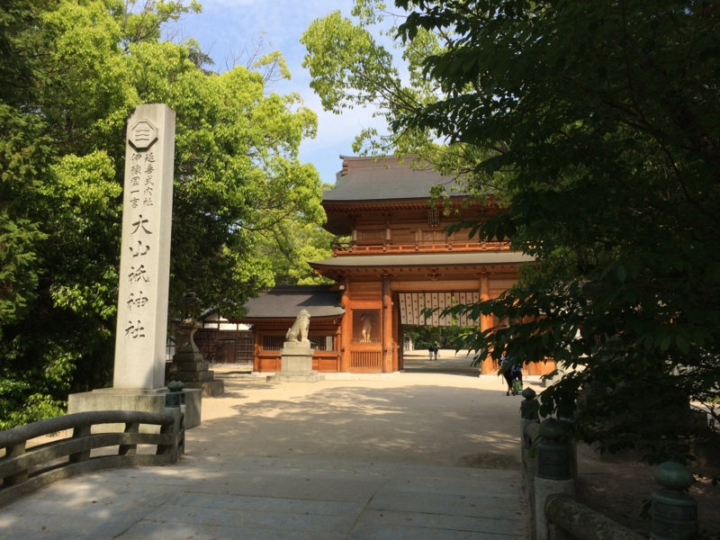
割と新し目な総門をくぐる。あとで調べたら、2010年に作られたらしい。いい匂いがしそう。
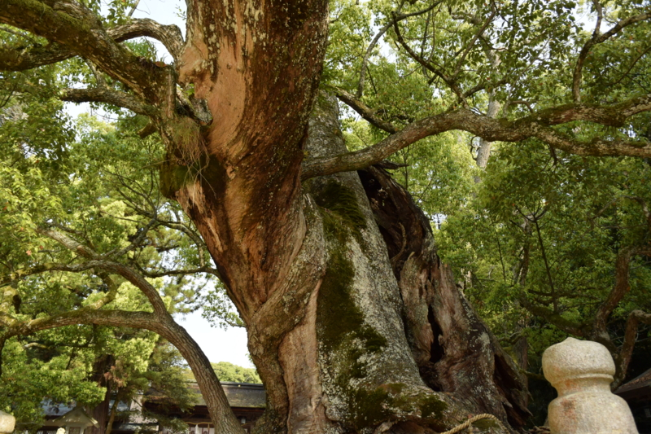
その向こうに、小千命（おちのみこと、今治のあたりにあった越智国造をつくったひと）の手植えと伝わる楠。だいぶ死にかけてる感じもするけど、まだまだ元気。ここで家族連れさんに頼まれて、iPhone で写真を撮ってあげた。この木がダイナミックに入るように少し下から上を見上げるようにして撮ってみたけれど、気に入ってもらえればいいのだが。
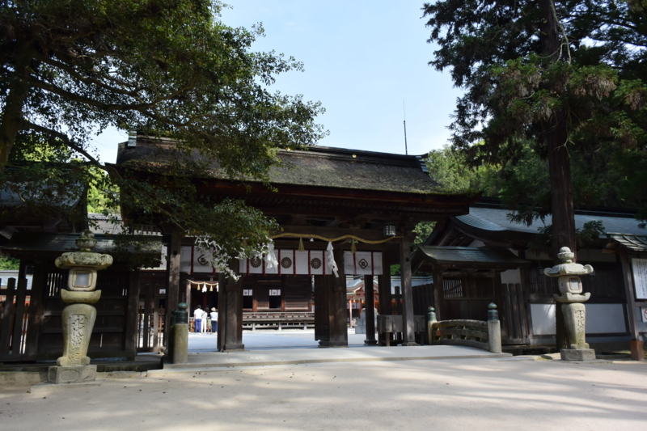
拝殿へ。おみくじでみごと凶を引き当てたので、お守り（1,000円）を買って赦しを請う。ついでに、御朱印もいただく。バイク＆艦これ：名張から天理、戦艦大和所縁の神社「大和神社」に行ってきた - だるろぐ では御朱印帳をもって行くのを忘れるという痛恨のミスを犯したが、今回はちゃんともらえた。大山祇神社で売ってる御朱印帳はわりとかっこいいので、ここで御朱印帳を買って、御朱印集めを始めるのもいいかもしれないね。
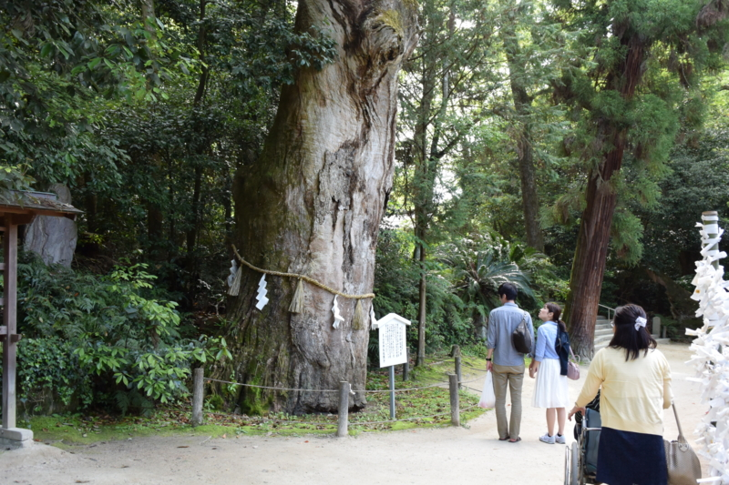
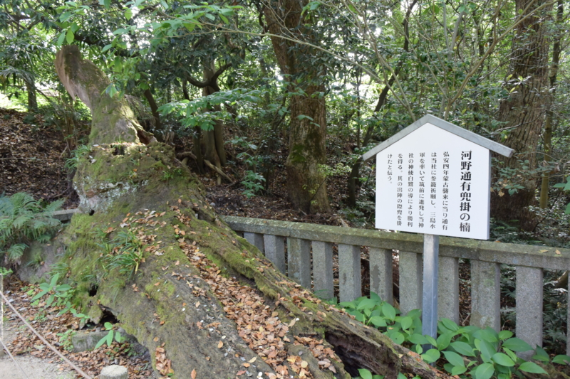
拝殿の奥にも立派な楠がいっぱいで、この神社の歴史を感じる。
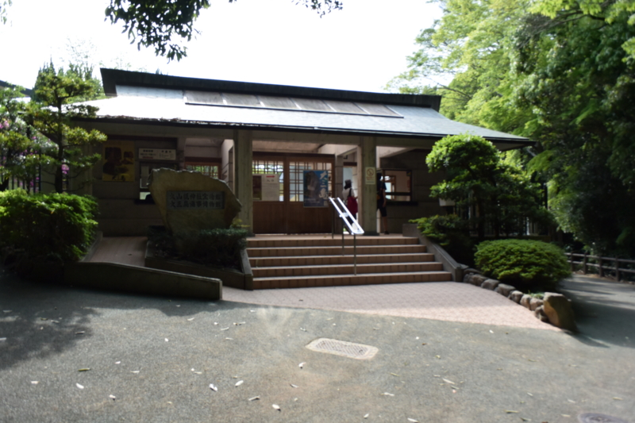
「紫陽殿」「国宝館」「海事博物館」への入り口。残念ながらここからは撮影禁止らしい。国宝やら重要文化財やらがごっろごろしてるのに！！（← だからだよ！） ここにおさめられている武器・武具はこの地を治めていた伊予守護家・河野氏などが奉納したものだそう。奉納するために作ったのではなく、戦いに勝った後、使っていた武具を奉納したらしく、毛並みのいいピッカピカのお上品なモノは少なく、どれもどこかしら傷んだ無銘のものが多い。だが、それがいい。
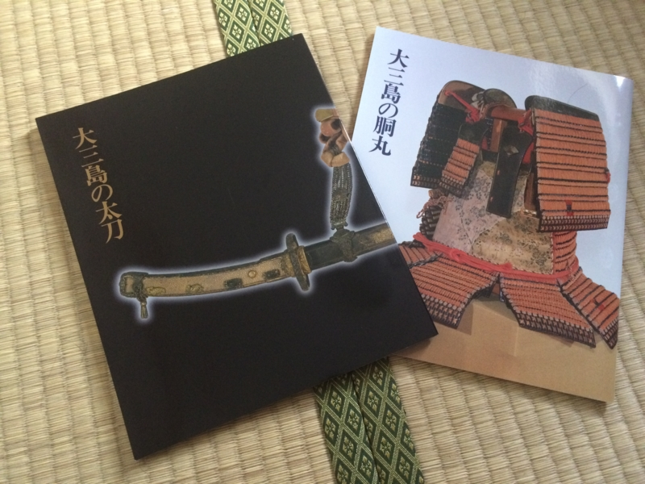
写真を撮っちゃいけないのが残念すぎたので、パンフレット（1冊1,800円）も購入。だるやなぎを囲む会（2015年5月）に行ってきた - なか日記 で大いに見せびらかした。
海事博物館は……昭和天皇が海洋研究で使われていたという葉山丸が展示してある。さまざまな海の生き物が展示されていたのだけど、この方面にはまったく昏く、コンブが美味しそうだなーなんて思いながら、ぶらぶらと一周して出てきた。子どもなんかは割と喜ぶかもしれない。
――と、まぁ、こんな感じ。
あとで調べたら、いろいろ見逃しているのもあるみたいなので、またゆっくり来たいと思う。買ったお守りも、来年返しに来なきゃだしね（やったことないんだけど、ほんとはそうするんでしょう？）。